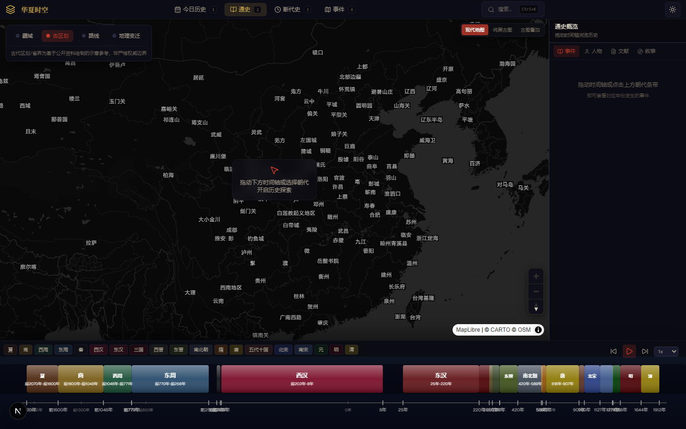
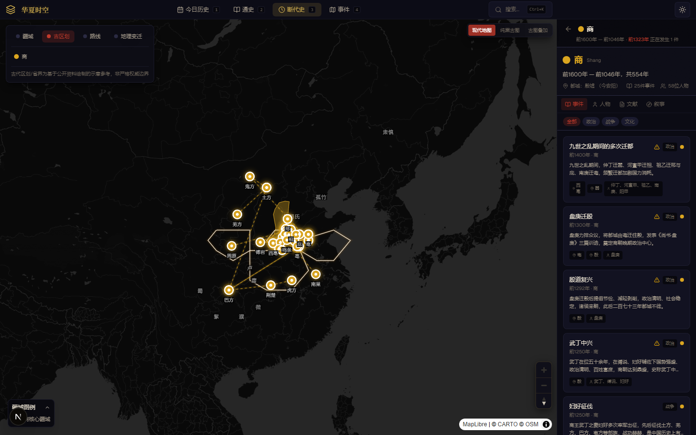
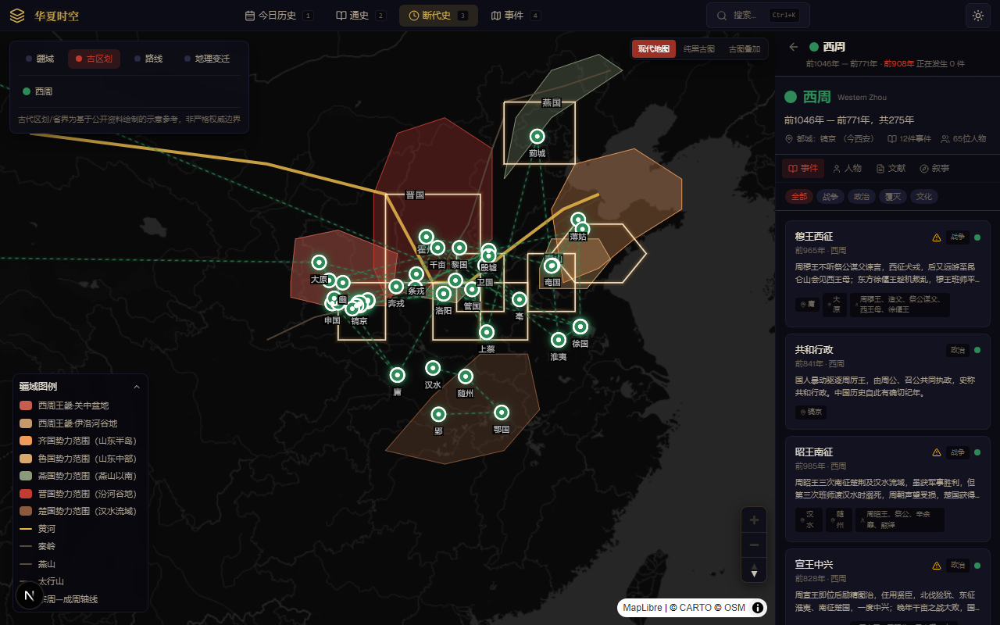
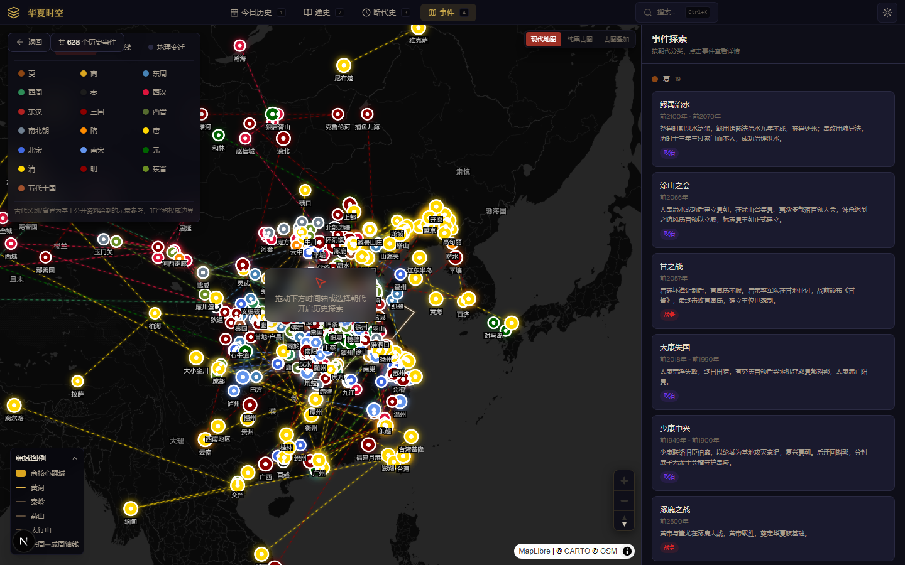

Demo 简介
「华夏时空」是一款面向历史爱好者、学生与教师的中国历代历史地图 Web 应用。 它将朝代时间轴、历史事件、古地位置与疆域变迁整合在一张可交互地图上，让冰冷的历史年表变成可看、可点、可探索的时空画卷。
核心功能
⏳
朝代时间轴
从夏商周到明清，一键切换断代史，地图与事件同步聚焦。
🗺️
疆域可视化
区域面填充 + 山河屏障线，直观呈现「大邑商」、西周分封、东周列国等格局。
📜
事件探索
628+ 条历史事件，含古籍出处、人物关系与现代地名对应。




拖动下方时间轴或点击朝代按钮，地图会自动切换到对应朝代，并展示该时期的核心事件。
朝代速览
点击下方朝代圆点，上方截图会同步高亮对应视图。
TRAE 开发亮点
- 使用 TRAE 的 AI 对话完成数据建模、疆域可视化重构、事件数据清洗与验证脚本。
- 通过自然语言描述（如「左孟门，右太行」）直接生成商朝疆域闭合多边形。
- 所有朝代疆域统一改造为「区域面 + 山河屏障线」的可视化模型。